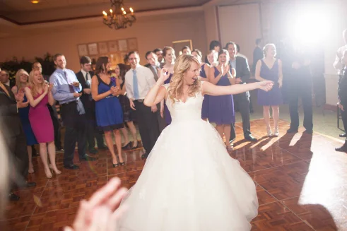

Conocénos
Con más de trece años de trayectoria en el mercado Argentino, contamos con la experiencia y dedicación que nos permite proveer cada día un mejor servicio para que puedas disfrutar al máximo tus eventos sociales o corporativos.
Comenzando en 2006 con una firme predisposición para con la satisfacción del cliente, empezaría este emprendimiento. Año tras año fuimos acumulando experiencias e integrando nuevo personal habiendo, al día de la fecha, realizado más de 400 eventos.

Nuestros clientes continúan eligiéndonos por nuestra adaptabilidad a sus necesidades, nuestra buena presencia y el deseo firme de cumplir y superar las expectativas.
Sabemos que un evento no es sólo un evento, sino que implica muchas emociones profundas, compromisos personales, dinero y esfuerzo en realizarse. Nuestra misión, cómo proveedores de organización y ejecución, es garantizarle a nuestros clientes la tranquilidad de saber que están en buenas manos para que puedan relajarse y disfrutar en un momento destinado a eso, a disfrutar.
Tomamos un compromiso personal ante cada evento: asegurarnos de que nuestros clientes estén satisfechos y disfrutando, haciendo de eso nuestra prioridad.
Podrás ver muchas de las experiencias de nuestros clientes por la galería, aquí